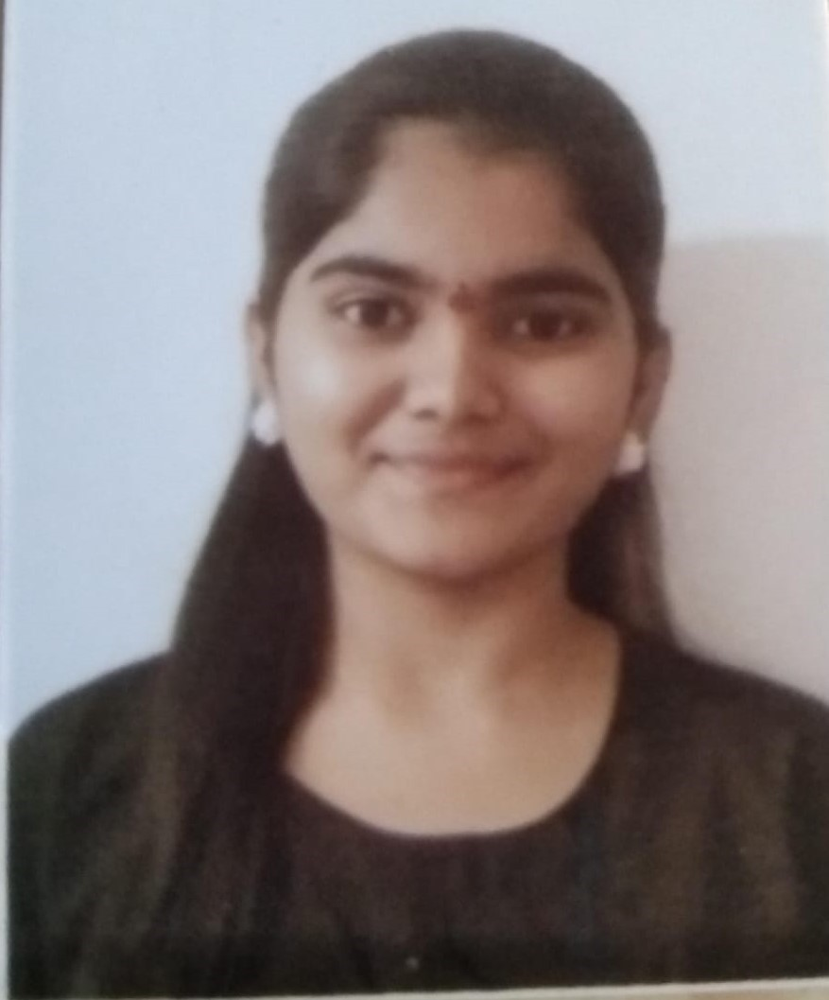

SNEHA TODKAR

CERTIFICATION
- MSCIT
- diploma in software programming
- IBM Frontend WebDevelopment Internship
CONTACT
EDUCATION
- Graduation
- Institute:- St. Miras College for girls
- Passing Year:- 2025
- Percentage:- 70.65%
- HSC
- Institute:- St. Miras College for girls
- Passing Year:- 2022
- Percentage:- 61.33%
- SSC
- Institute:- Nutan Madhyamik Vidyalaya School
- Passing Year:- 2020
- Percentage:- 85.20%
SKILLS
- Teamwork
- Collaboration
- Problem solving
- Analytical and quantitative
- Web development(HTML, CSS, database(SQL basic))
SUMMARY
BCA fresher with a strong foundation in computer applications,
programming languages, and technical skills. A quick learner
and team player, eager to contribute to an organization’s
success by leveraging my knowledge and passion for
technology. Motivated to learn and grow, seeking a challenging
opportunity to apply my skills and gain practical experience in
the field of software programming .
PROJECT EXPREIENCE
IBM Web development internship (1 month)
Worked as a team.
We made project on Hair studio with help of HTML, CSS,
JAVASCRIPT.
Project on Online Shopping System .
Worked on database and back-end connectivity .
HOBBIES/CO HOBBIES AND COCURRICULAR ACTIVITIES
Learning new things
Participate in exhibition on computer technology
Participate in college event Exodus
Volunteering